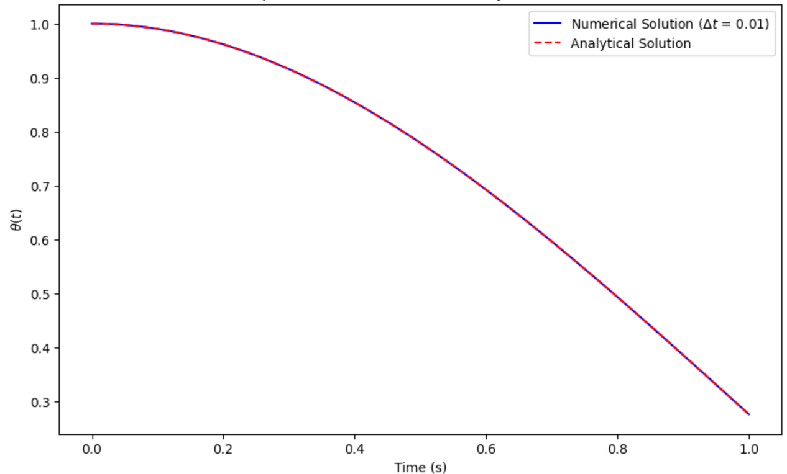
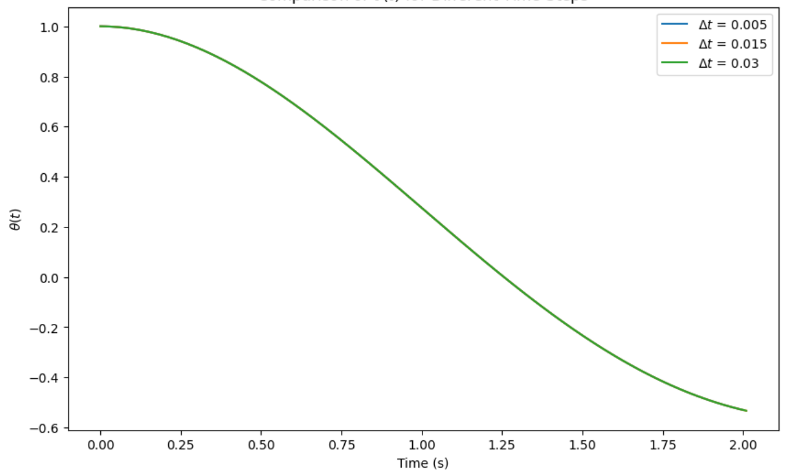
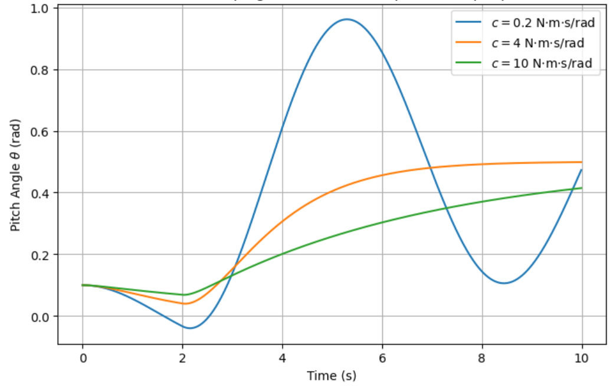

Overview
Pitch is the axis that governs a UAV’s climb and descent, and how well a vehicle damps out pitch disturbances is a direct driver of stability, maneuverability, and safety. This project modeled UAV pitch motion as a single second-order ODE in the pitch angle, driven by inertia, aerodynamic stiffness, damping, and an external control moment, and used it to study two questions: how do the physical parameters (inertia, stiffness, and especially damping) shape the transient pitch response, and how much better does an active feedback controller do at rejecting that response than simply forcing a fixed input and waiting it out. Answering both meant building a numerical integrator accurate enough to trust, then using it to sweep across damping regimes and controller types.
What I did
I rewrote the second-order pitch equation as a first-order system in the state vector [θ, q] (pitch angle and pitch rate) and integrated it with a fourth-order Runge-Kutta (RK4) scheme, which combines four slope evaluations per step to cancel out lower-order error terms and reach a global error of O(Δt⁴). Before trusting the integrator on the full problem, I validated it against the closed-form analytical solution of the homogeneous damped oscillator (zero control input, a known initial condition, and the standard underdamped solution in terms of the natural and damped frequencies). Running the same homogeneous case across a range of time steps and plotting the absolute error against Δt on a log-log scale gave a measured slope of 4.02, matching RK4’s theoretical fourth-order convergence almost exactly and confirming the implementation was correct rather than just plausible-looking.

With the integrator validated, I checked how coarse a time step could get away with staying accurate by comparing runs at Δt = 0.005, 0.015, and 0.03: all three tracked each other closely, indicating that anything at or below roughly 0.03 s was a safe choice for this system. I still ran the main study at Δt = 0.001 for extra margin, over a 6-second window with the moment of inertia and stiffness held fixed and the damping coefficient swept across several values to move the system between under-damped, critically damped, and overdamped behavior.

Applying a step input at t = 2 s and sweeping the damping coefficient reproduced the classic second-order response families directly: at low damping the pitch angle overshoots substantially and oscillates with slowly decaying amplitude, at the critical damping value it returns to equilibrium in one smooth motion with no overshoot, and at high damping it approaches equilibrium monotonically but noticeably more slowly. That progression matches the theoretical overshoot relationship OS ≈ exp(−ζπ/√(1−ζ²)) in terms of the damping ratio ζ = c/(2√(Iyyk)), where ζ < 1 is under-damped, ζ = 1 is critical, and ζ > 1 is overdamped.

The phase portraits (pitch angle plotted against pitch rate) make the same story visual: the under-damped trajectory spirals around the origin and, in the undamped limit, would circle forever, the critically damped trajectory cuts almost directly to the origin, and the overdamped trajectory creeps in along a slow arc with no oscillation. These are exactly the behaviors a feedback controller has to manage, and they made clear that under-damped response is the regime to actively suppress.
Finally, I compared the open-loop step input against a proportional-derivative controller, u(t) = −Kpθ(t) − Kdq(t) with Kp = 4.0 and Kd = 1.0, continuously correcting the control moment based on both the current pitch error and its rate of change rather than applying one fixed input and waiting. The PD-controlled response converged to equilibrium markedly faster than the step response, with substantially less overshoot and almost no residual oscillation, which is the practical payoff of feedback: it actively counteracts the system’s own momentum instead of just forcing it and hoping the natural damping handles the rest.
Taken together, the results tied a validated fourth-order numerical method to a clear physical story: damping governs the shape of the transient response exactly as the analytical overshoot formula predicts, and active feedback beats an open-loop input at every damping level by directly counteracting the system’s motion instead of just exciting it and waiting.
Tools & methods
Implemented the RK4 integrator, the step and PD control laws, and the analytical validation case from scratch in Python with NumPy, and used Matplotlib for every time-series plot, phase portrait, and the log-log convergence study.
Outcome
Ended up with an RK4 integrator whose measured convergence order (4.02) matched theory almost exactly, a clear demonstration of how the damping ratio moves the pitch response between under-damped, critically damped, and overdamped behavior consistent with the analytical overshoot formula, and a direct, quantified comparison showing the PD controller reaching equilibrium faster and with far less overshoot than an open-loop step input.